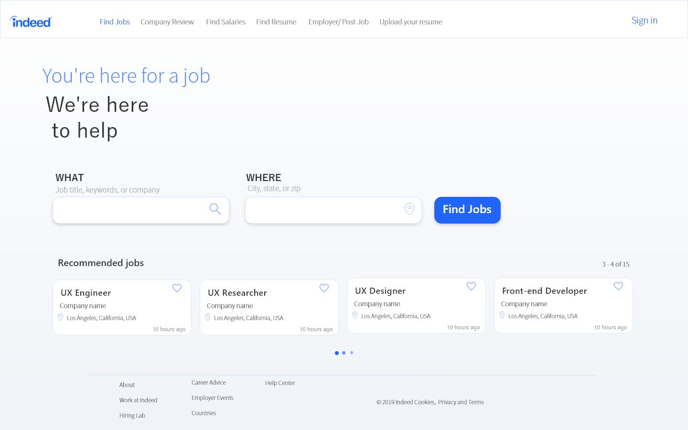
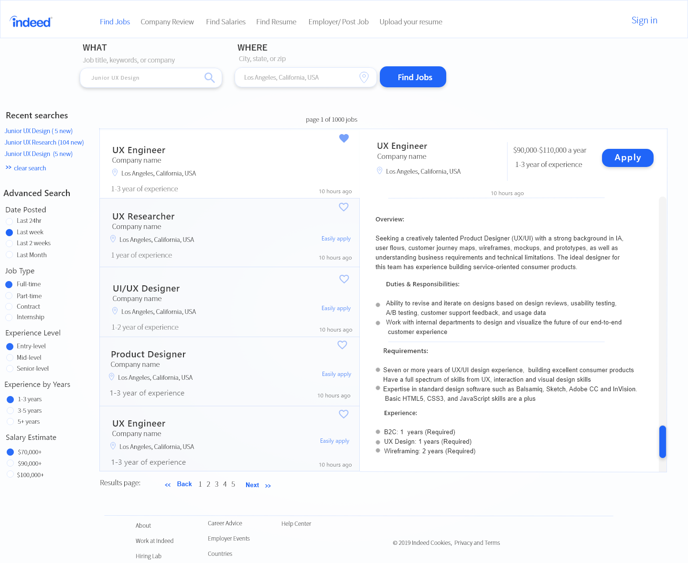

Overview:
Indeed is a search engine for job,it is an example of the vertical search; Indeed allows job seekers to apply directly to jobs on Indeed’s site and offering resume posting and storage. I use Indeed everyday, and found a few things that could improve.
The Problem
- Usability and Aesthetics need to be improved.
- Needs a feature that differentiates them from Linkedin, Glassdoor, and more.
- Lacks physical consistency:this concept describes the consistent outer appearance of a web-site, position of logos, navigation, the use of graphic elements and typography. It is essential for better orientation and effective site navigation.
The Process
Existing indeed Available To The Public
Wireframes
I mainly focused on re-designing two pages of indeed, these pages seems to be the most important pages of the website.
I focused on fixing the lack of physical cosistensy, and bringing a minimalist approach to the layout.
UI Elements
These are the chosen color and typography in respect to the Indeeds brand
Final Design
This re-design page is less crowded and keeps the consitency of button shapes,length and colors

This re-design, adds and keeps some of the features of the left-panel. The right-side panel on the original design was a little unecessary and contained too much white space.
